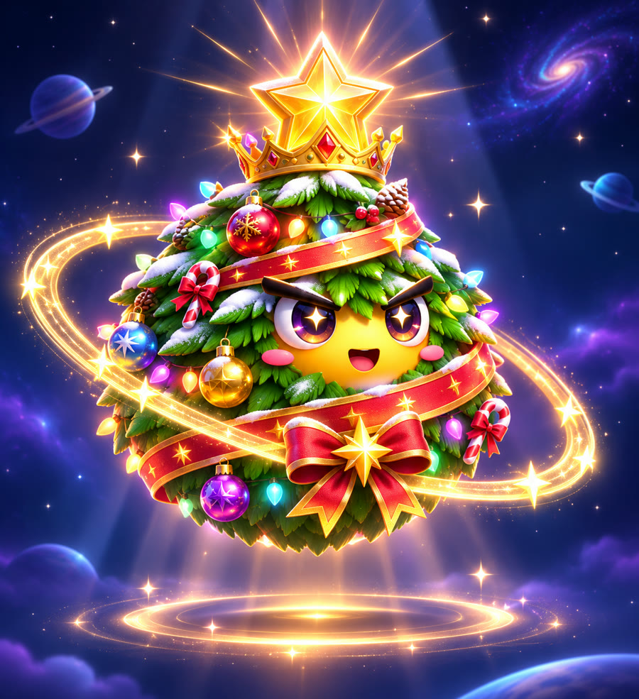
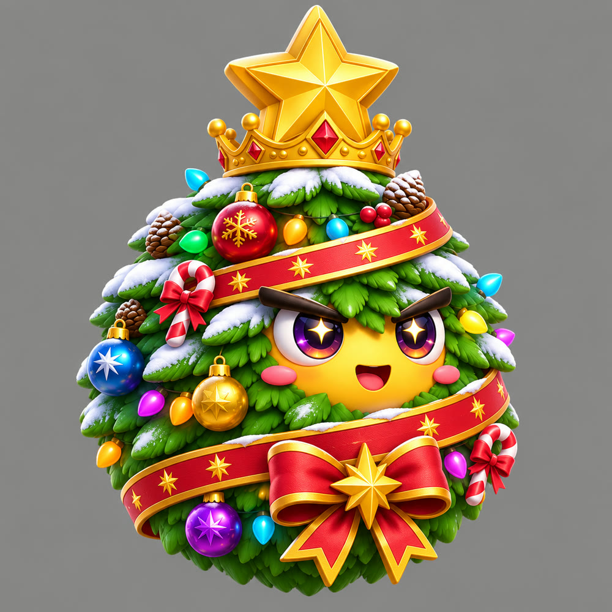
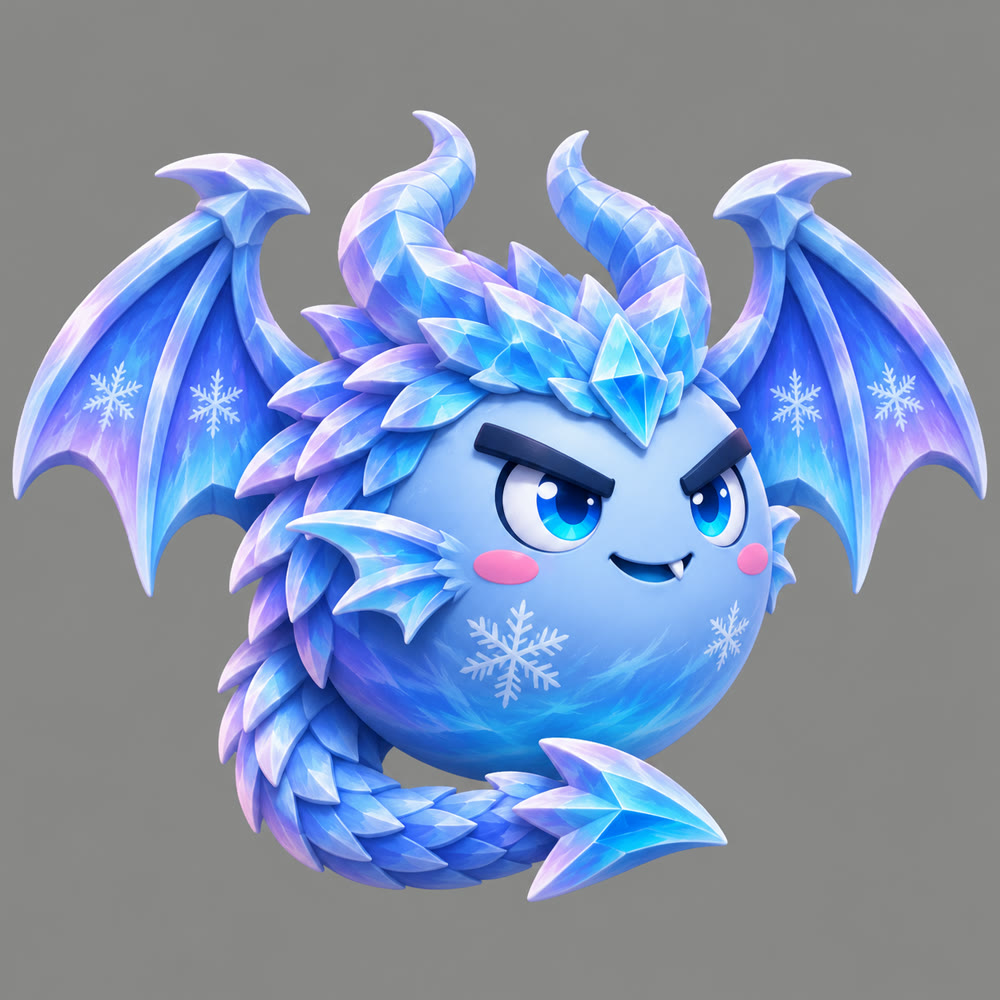
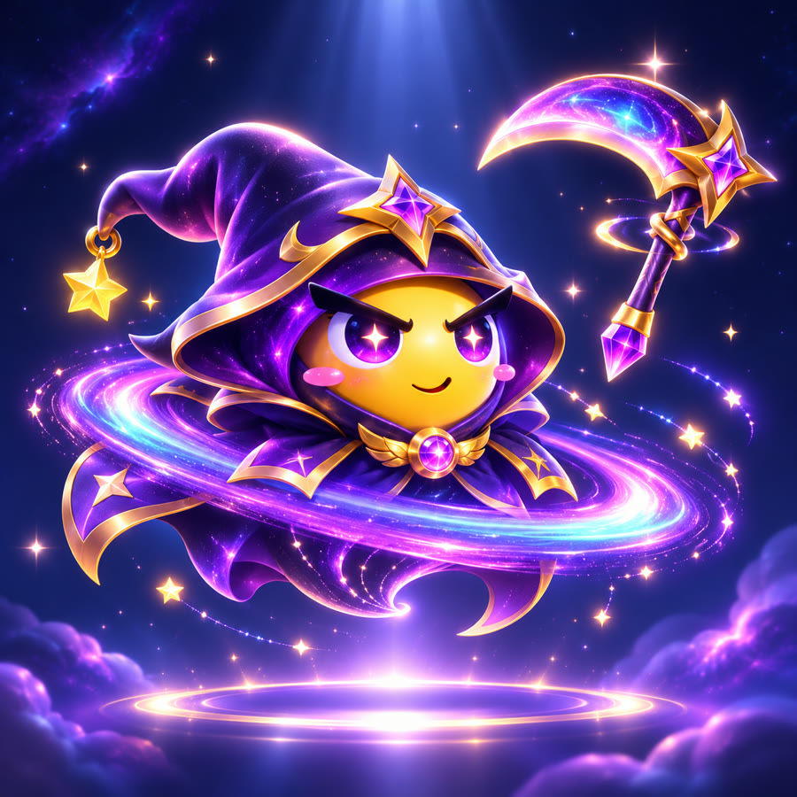
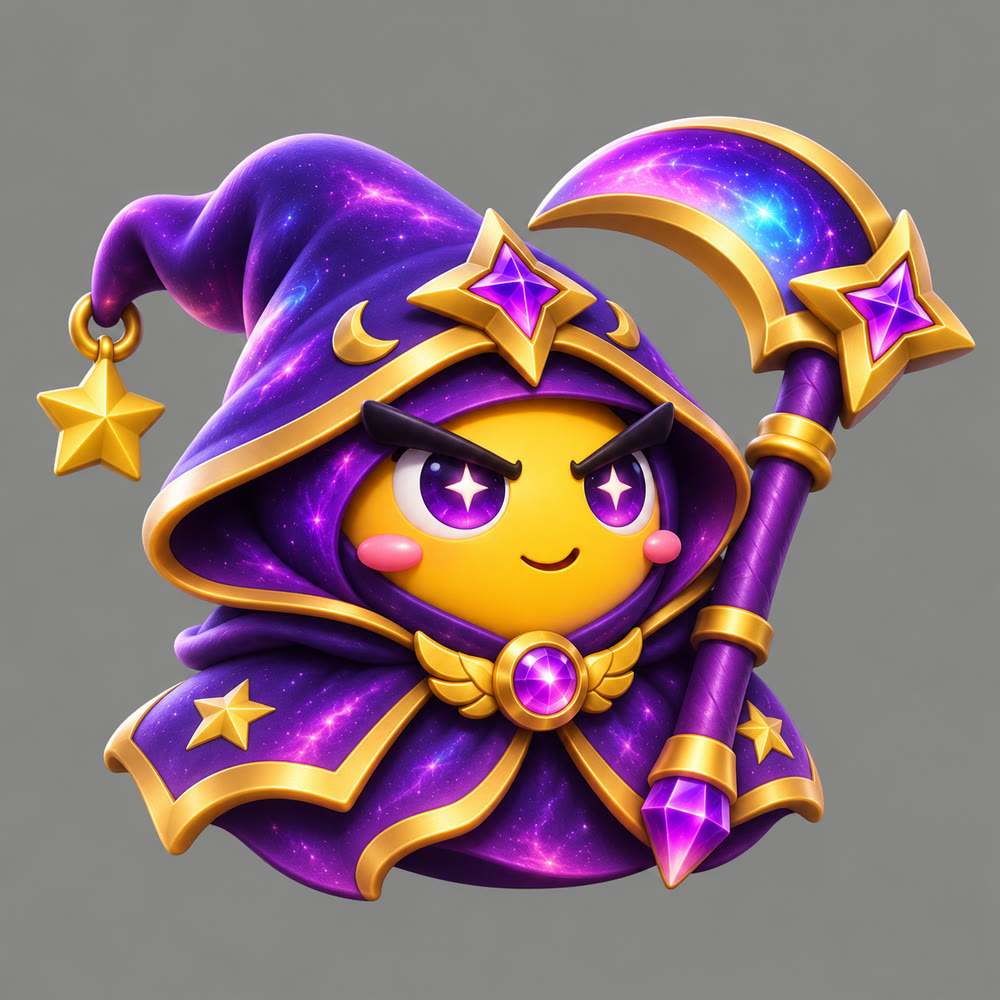
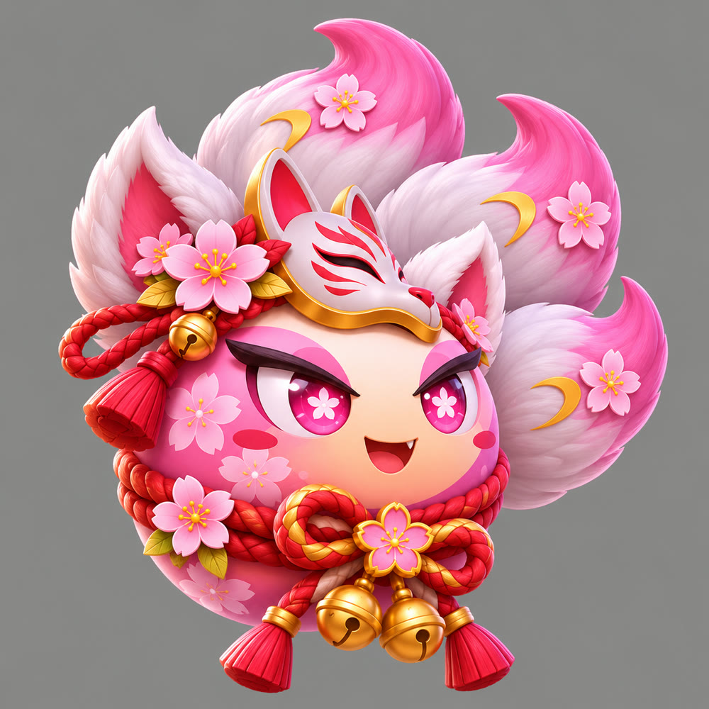

전설 스킨 — 3D 변환용 콘셉트
2026년 11월 24일. 왼쪽은 이전에 고른 콘셉트, 오른쪽은 AI 3D 변환에 맞게 새로 뽑은 그림입니다 (OpenAI gpt-image-2 생성, 실제 게임 화면 아님). 빛 번짐·입자·떠 있는 고리를 빼고 캐릭터 한 덩어리만 또렷하게 그렸습니다. 뺀 효과는 게임에서 셰이더와 입자로 다시 얹습니다.
별빛 트리

이전 콘셉트

3D 변환용 새 콘셉트
서리 드래곤

이전 콘셉트

3D 변환용 새 콘셉트
꼬마 사신

이전 콘셉트

3D 변환용 새 콘셉트
벚꽃 여우신

이전 콘셉트
